Disabling AI
Overview
This guide provides instructions on what bundled AI features of PyCharm are required to be disabled for the COMP 1510 course.
AI can be a powerful tool for programmers, and is often preinstalled and enabled by default in applications. A fresh installation of PyCharm comes with some of these tools and features already enabled. A requirement for the COMP 1510 course at DTC, is for all AI coding assistance tools to be disabled in PyCharm.
Danger - Course Requirements May Differ
The requirements for which AI settings are to be disabled are determined by the instructor of the COMP 1510 course. They may be different than what is displayed in this guide or could change at a moments notice. It is the reader's responsibility to ensure that their IDE's AI setting follow the specific requirements set by the instructor over following this guide.
Warning - Steps Must be Followed in Order
If these steps and sections are not followed in the specified order, the options offered in the menus may change. This may lead to impropperly disabled settings. This issue could also occur if any of these settings are not in their default state before beginning this guide. If you are unable to access a setting, please follow the troubleshooting guide.
Opening the Settings Menu
There are multiple ways to access the settings menu in PyCharm, however this method should be available to you while you are accessing almost any part of the application.
- Focus the PyCharm window.
-
- Click on the [small gear] icon in the top right corner of the application.
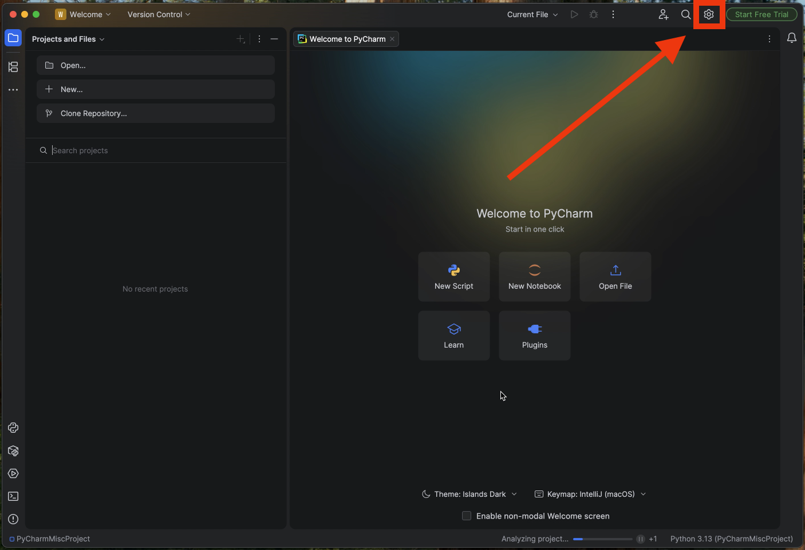
- If you are on the "Welcome to PyCharm Page", the icon may be located in the bottom left corner depending on your theme style.
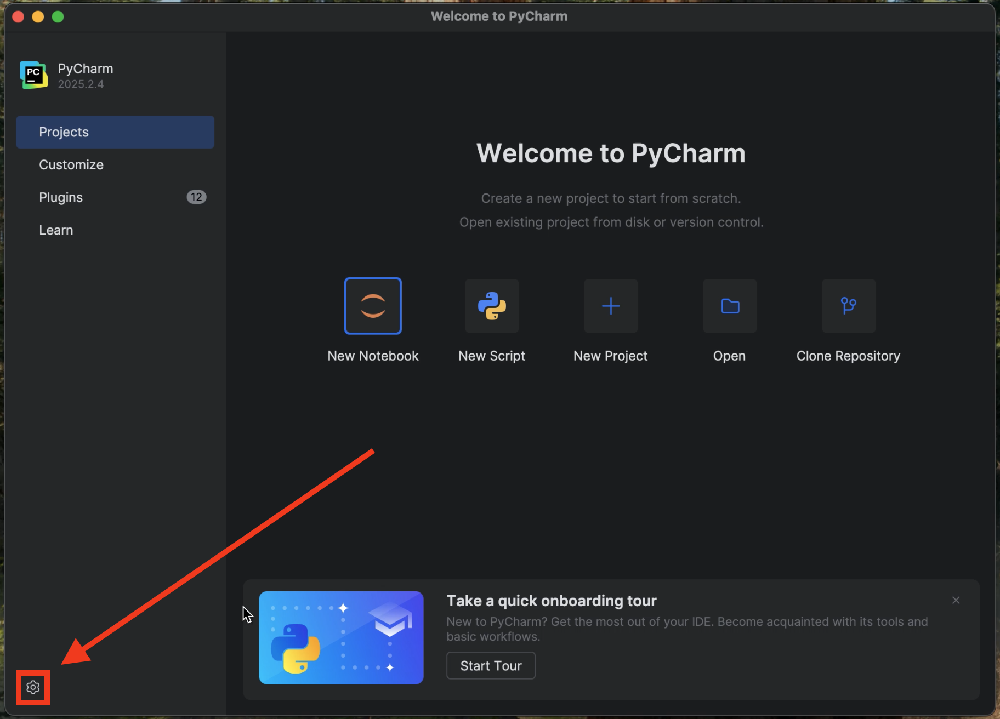
-
- Click on [Settings...] in the drop-down menu.
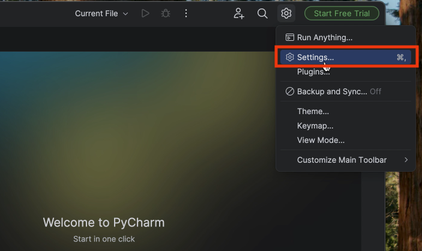
- By default, the specific settings page that was last open will reopen. You can click on the various options in the left panel of the menu window to open, expand, or collapse them.
Success
- The settings menu has been successfully opened. Continue with the "Disabling AI Inline Completion" section.
-
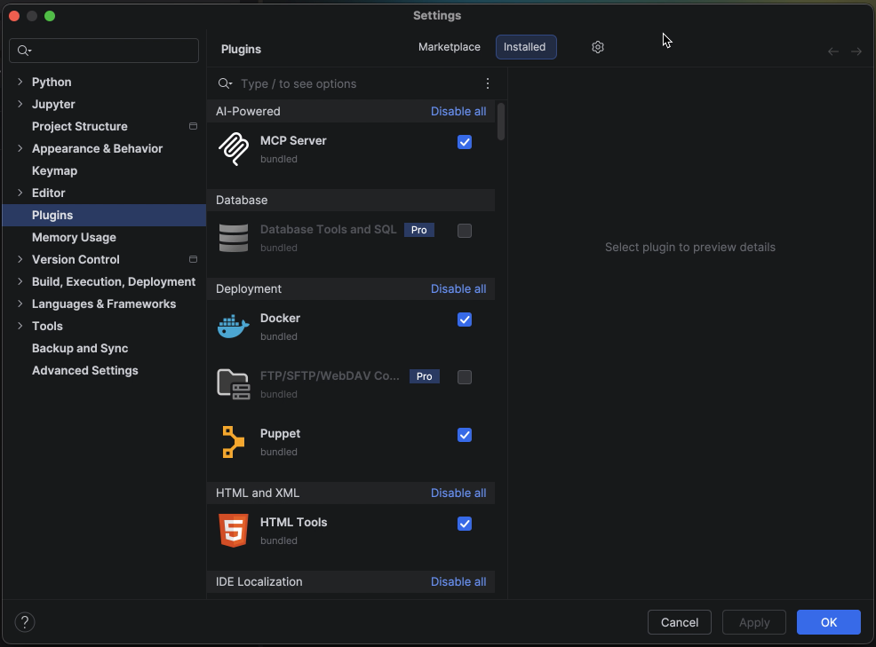
Note - Settings Menu Shortcut
The default keyboard shortcut to open the settings menu on Windows is: Ctrl + Alt + s.
On macOS it is: Cmd + ,.
Disabling AI Code Completion
These steps will assume that the user has the settings window of PyCharm already open. If you do not, please follow the instructions outlined in "Opening the Settings Menu".
- Select the search bar at the top of the left side of the menu window.
- Type
Machine. When you do so, the available options in the left panel of the menu should decrease. -
- Select: [Editor] > [General] > [Code Completion] in the left panel.
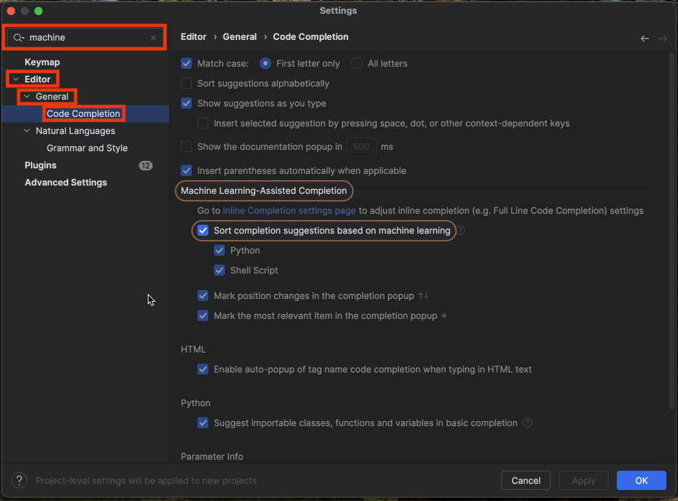
- This will open a new page on the right side of the menu window.
-
- Uncheck the checkbox beside [Sort completion suggestions based on machine learning] under the "Machine Learning-Assisted Completion" header on the "Code Completion" page that we have just opened.
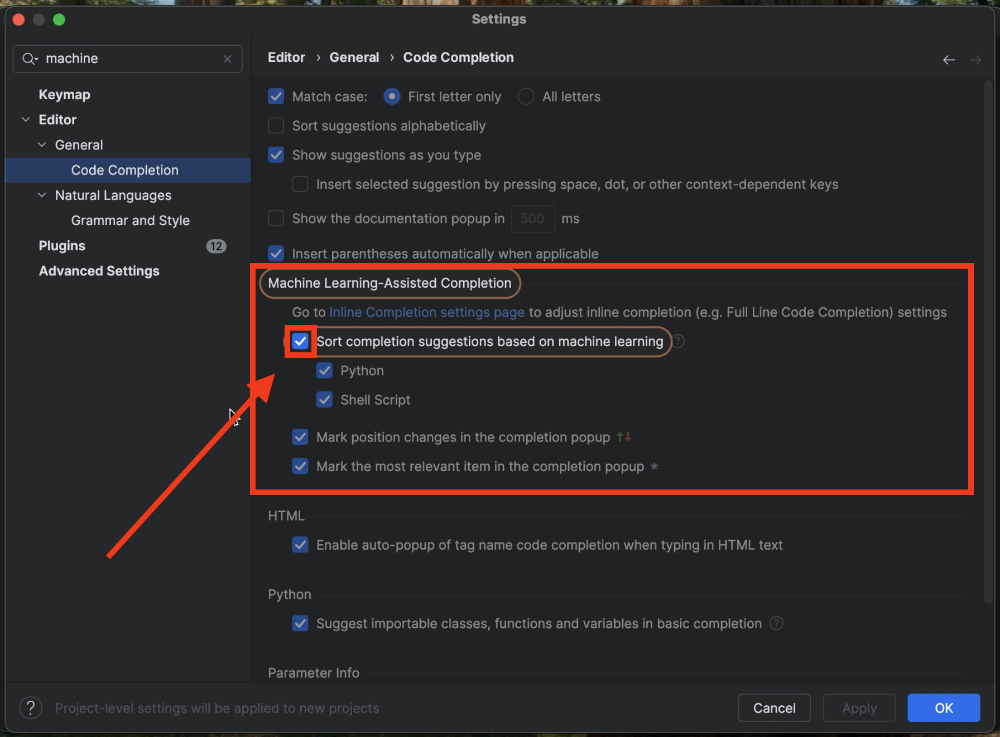
- The rest of the options on this page should become grayed out immediately.
Note - Highlighted Options
Because we have used the search feature, the menu has already highlighted the section and checkbox we are looking for. This will happen anytime the search is used to locate a setting.
Success
AI Code Completion has been succuessfully disabled. Continue with the "Disabling AI Inline Completion" section.
Disabling AI Inline Completion
These steps will assume that the user has the settings window of PyCharm already open. If you do not, please follow the instructions outlined in "Opening the Settings Menu".
- Select the search bar at the top of the left side of the menu window.
- Type in
Inline. When you do so, the available options in the left panel of the menu should drastically decrease. -
- Select [Editor] > [General] > [Inline Completion] in the left panel.
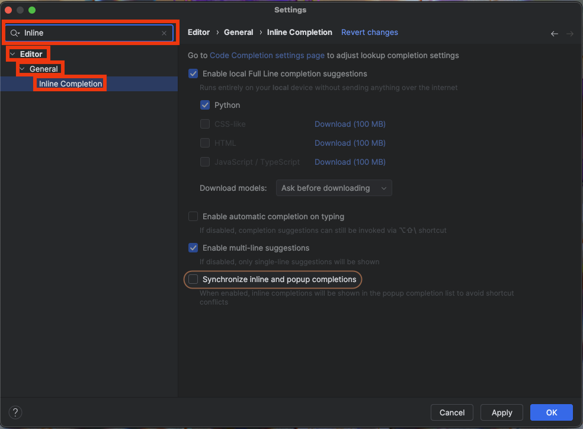
- This will open a new page on the right side of the menu window.
-
- Uncheck "Enable local Full Line completion suggestions" on the "Inline Completion" page that we have just opened.
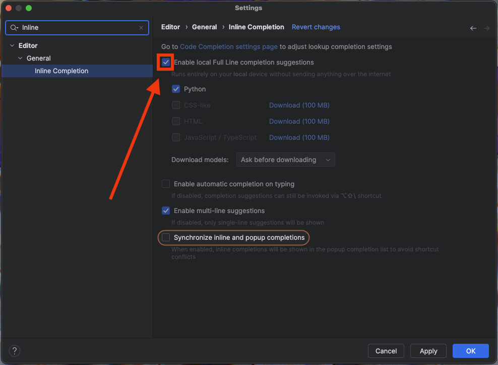
- The rest of the options on this page should become grayed out immediately.
Note - Highlighted Options
Because we have used the search feature, the menu has already highlighted the section and checkbox we are looking for. This will happen anytime the search is used to locate a setting.
Success
AI Inline Completion has been succuessfully disabled. Continue with the "Disabling Bundled AI and Machine Learning Plugins" section.
Disabling Bundled AI and Machine Learning Plugins
These steps will assume that the user has the settings window of PyCharm already open. If you do not, please follow the instructions outlined in "Opening the Settings Menu".
-
Select [Plugins] from the left panel. This will open a new page on the right side of the menu window.
Note - Difficulty Finding the Plugins Option
If you are having difficulty locating the plugins option, minimize the dropdown menus located in the left portion of the settings window. The "Plugins" option is visible when all sections are minimized.
-
- Select [Installed] at the top of the "Plugins" page that we have just opened.
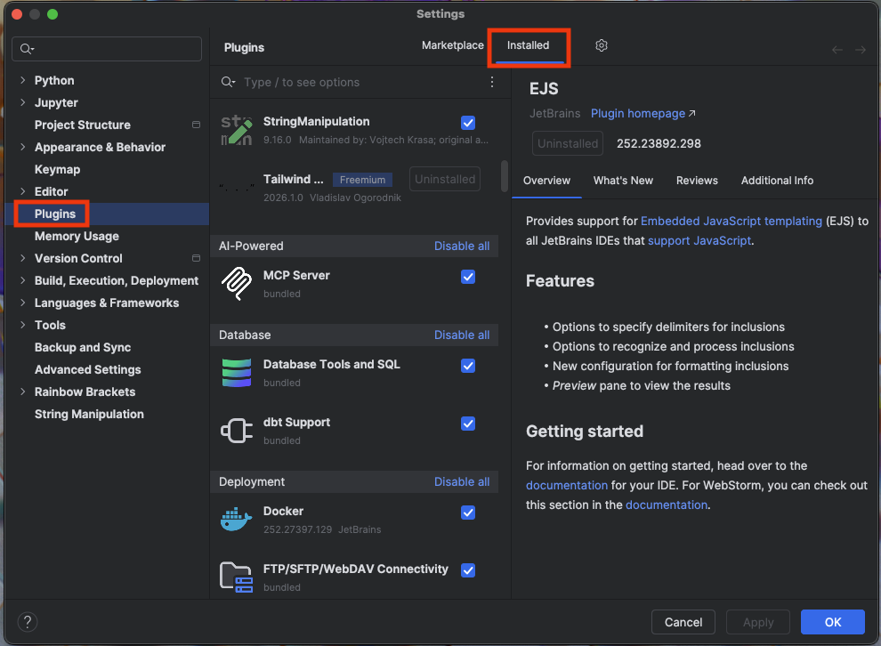
-
Type
Machinein the [search bar] above the list of plugins. - Uncheck the checkboxes beside the following plugins:
- [Machine Learning Code Completion]
- [Machine Learning in Search Everywhere]
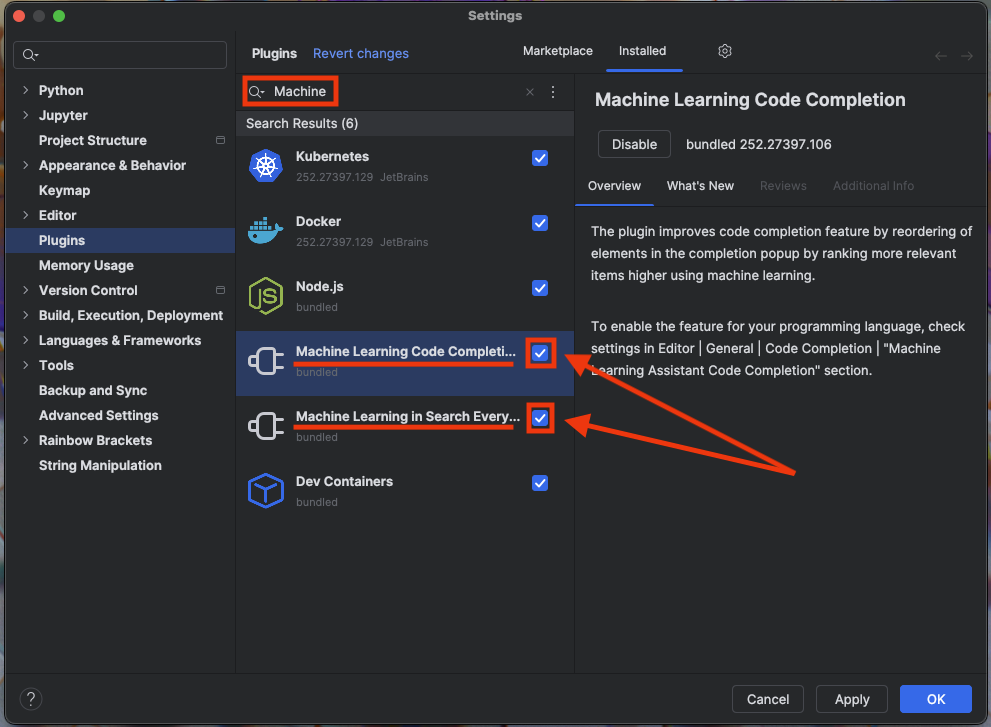
- When a plugin has been disabled it will be grayed out and the checkbox will be empty.
- Type
Fullin the [search bar] above the list of plugins. - Uncheck the boxes beside the following plugins:
- [Full Line Code Completion]
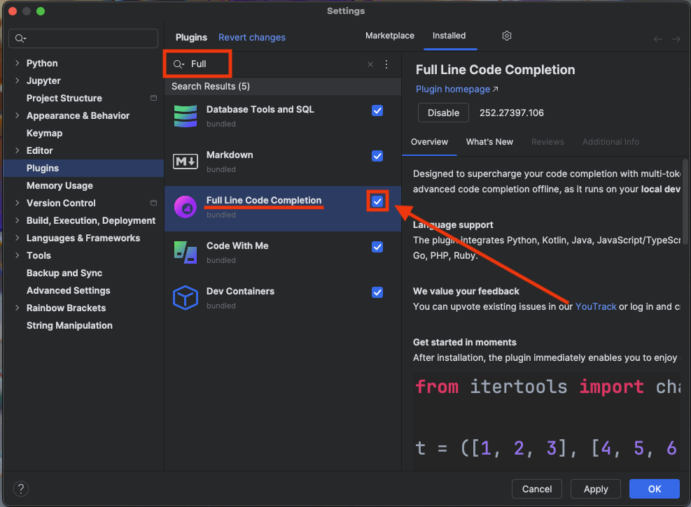
- When a plugin has been disabled it will be grayed out and the checkbox will be empty.
Danger - Bundled Plugins May Differ
The plugins that come preinstalled in PyCharm may be different than the ones mentioned in this guide in the future. Please ensure you follow your instructor's requirements of which plugins to disable.
Conclusion
If you followed all the previous steps in order, you will have successfully disabled the AI tools that are required to be disabled for COMP 1510, and are ready to move on to Linking a GitHub Account. If you were unable to locate any of the options, please follow the troubleshooting guide.